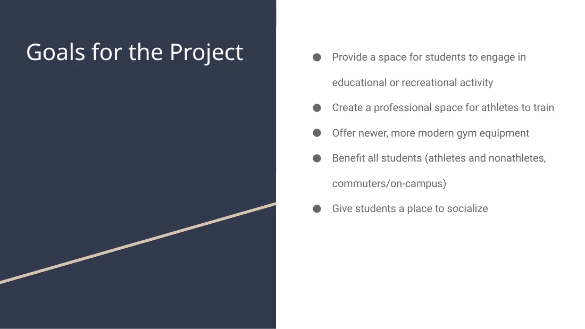
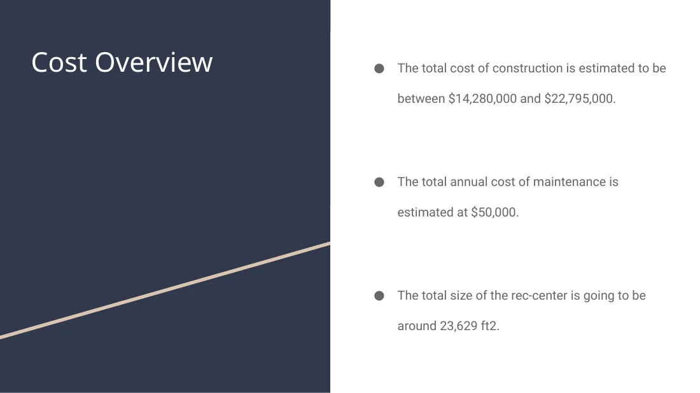
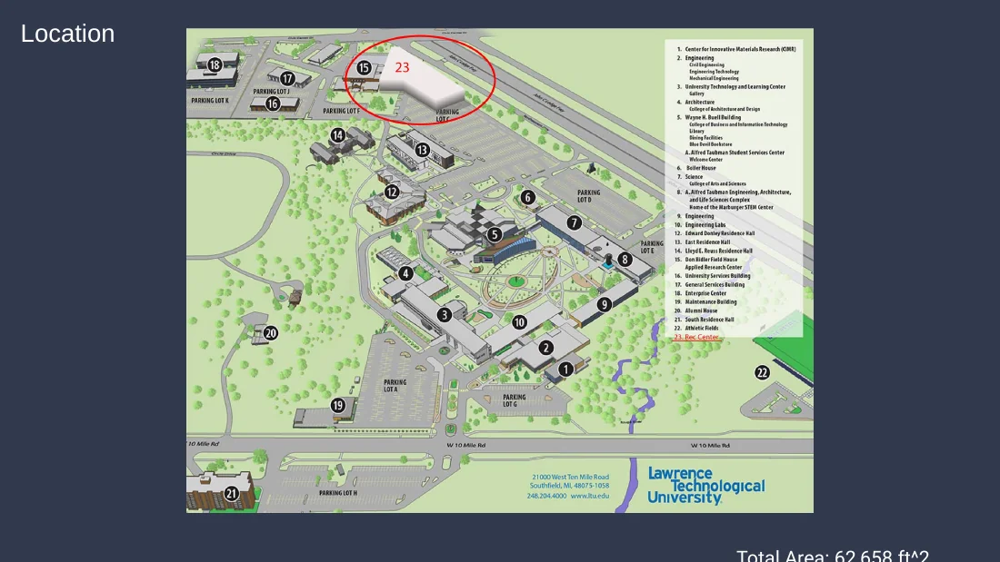
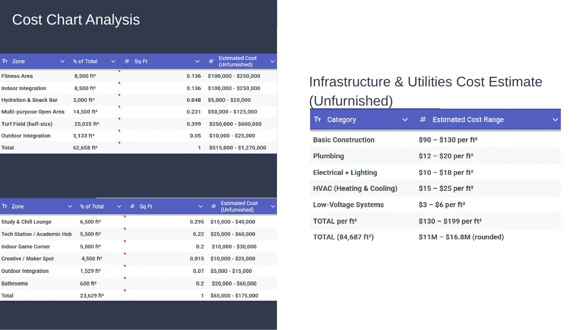
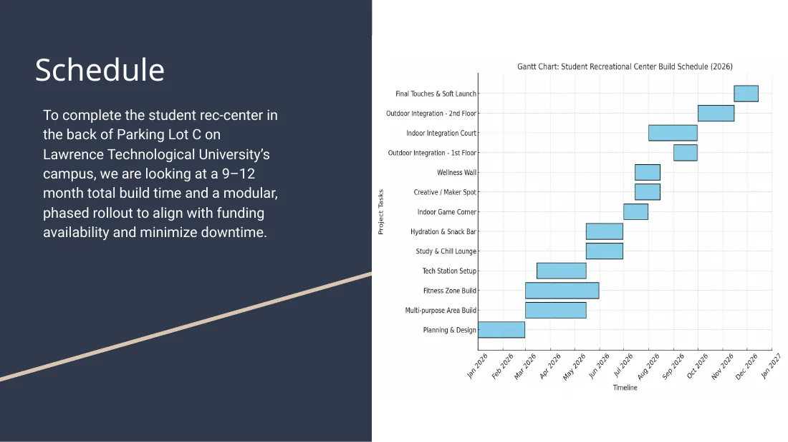

Project goal
Create a space for recreation, training, studying, socialization, and student engagement for athletes and non-athletes.
Technical & Professional Communication
Team proposal for a new LTU student recreation center combining research, stakeholder-focused communication, cost planning, site selection, and scheduling.

Create a space for recreation, training, studying, socialization, and student engagement for athletes and non-athletes.
The proposal considered facility size, location, amenities, construction/maintenance cost, and a phased project schedule.
The project framed the recreation center around community, engagement, physical/mental health, and academic support.
Engineering process
The presentation estimated total construction cost between $14.28M and $22.795M and annual maintenance around $50,000.
A 9–12 month phased rollout was proposed to align construction with funding and reduce disruption.
The project required turning research, cost ranges, layouts, schedules, and recommendations into a clear team presentation.
Project archive
This material stays inside the case study so the main portfolio pages remain clean.




